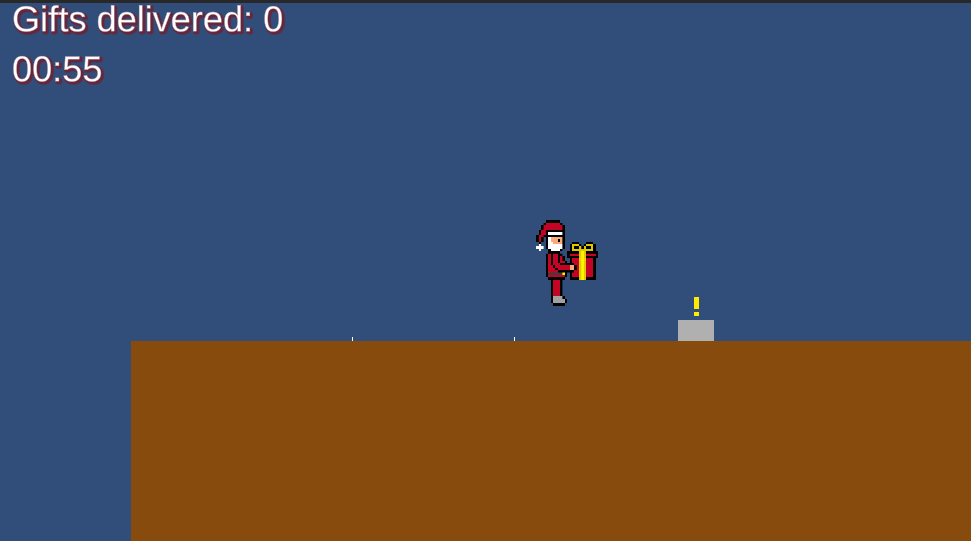
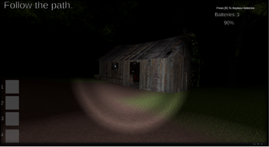
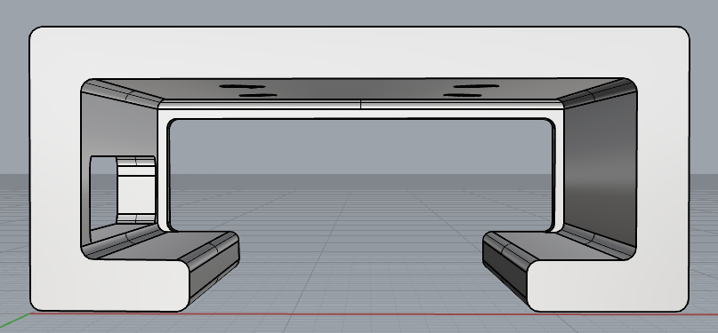
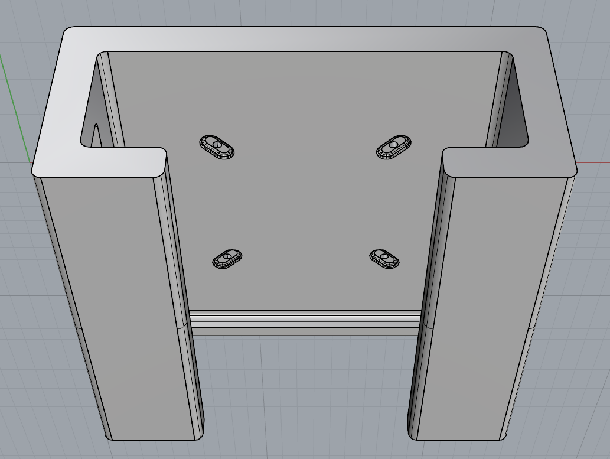

My name is Antti. I am an 18 year old programming student, who recently completed their 3 year studies in the Vocational School of OSAO. These studies were mainly focused on Unity game development, and most of them being VR projects. This is where most of my current knowledge resides, though I am looking to broaden my horizon and areas of expertise with any future studies and projects.

My first ever videogame project was a 2D platformer game in Unity. You play as Santa Claus, and the game's general gameplay loop consists of two gamemodes: deliver as many presents as you can in 60 seconds, or deliver the required amount of presents as fast as possible. The game's challenge comes from the precise inputs you have to do in order to get the perfect movement and momentum to go as fast as possible, while being able to stay on the buildings without falling off.

My second videogame was a group project with three people, a 3D spin-off of Gun Guy, which was a 2D-game of another group member. Starting out following the horror genre, the game has the player going through a forest, completing different given tasks while avoiding zombies. At the end, the player reaches a shack, where they find a gun, and have to kill the zombies in a wave survival style to end the flow.
My third videogame was another group project, a VR sandbox game showcased in Vectorama, which is a yearly online gaming event in Finland. Within the small given area, players can collect snow from the ground, freely connecting different shapes to create whatever they want. The map also contains boxes with different decorations for snowmen, as well as minigames to unlock different tools for building.
Once I started my on-the-job training at the University of Oulu, my first assignment was to make a tutorial for VR Interaction within a Unity Project. The tutorial can be accessed through a panel above the palm of the user's hand, first asking for a preferred language. Afterwards, the tutorial contains pages with well detailed explanations of each function, and how to use them, along with videos of the functions in action. The tutorial script is built to be easy to understand and modify, allowing for the editing and addition of different tutorial languages, pages of content, guidance videos, buttons with different functions, as well as visual features.
My second assignment at the University of Oulu was to make an automated API data request system through an Unity project, allowing its use for active environmental visualization. The API contains data gathered from different rooms of the campus area through sensors, the ones used for the project being Co2 values. The data request script allows the user to set the device IDs of as many sensors as they want, from which the most recent Co2 values are stored to variables within an array, and updated each minute. These values can then be used in any form of visualization, the example I made being Unity particle objects changing their opacity based on the given Co2 value.

My final assignment at the University of Oulu was to model a 3D printable holster for the HP Z2 G9 Mini Workstation, held under a table through the use of screws. The design was made using Rhino 8. The holster has openings on the left side for ports, and the back side has been kept fully open due to the cooling system and all other ports residing there, though there are slight edges, which keep the computer from falling through the back.

The bottom of the holster has a wide opening through the middle, leaving the screw holes unblocked. The Screw hole positions and distances were designed following the VESA standard formula. The overall size of the holster has been measured with Rhino's innate size tool, and adjusted according to the official size of the mini workstation, to fit the role.
Email: antti.aho356@gmail.com
Phone: +358401945991
Discord: 352134024870887424